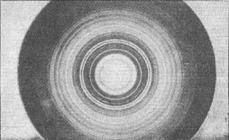
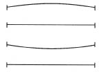
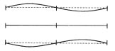
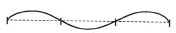

(Fotoğrafı çekenler: Loria ve Klinger)
Elektronik dalgaların kırınımı
Başka durumlarda da gördüğümüz gibi, bu salınım, yay boyunca belirli bir hızla yayılan bir dalga oluşturur. Uzunluğu sonsuz bir yay düşünürsek, o zaman, yaratılan dalgaların sonsuz yolculuğu hiç aksamadan sürecektir.

[Şekil-72]
Şimdi başka bir durumu ele alalım: Aynı hortumun ya da yayın iki ucu birer nesneye tutturuluyor. İstenirse bir keman teli de kullanılabilir. Şimdi, hortumun ya da keman telinin bir ucunda bir dalga yaratılırsa ne olur? Dalga, ilk örneğimizdeki gibi yol almaya başlar, ama biraz sonra öbür uçtan yansıyarak geri döner. Şimdi iki dalga vardır; bunların birini salınım, öbürünü ise yansıma yaratmıştır. Bu iki dalga karşıt yönlerde yol alır ve birbiri ile girişir. Onların girişimini (interference) izlemek güç değildir. Dalgaların üst üste binmesinden bir tek dalga doğar. Bu dalgaya duraklı dalga denir. “Duraklı” ve “dalga” sözcükleri birbiri ile çelişiyor gibi görünmektedir; bununla birlikte, bu iki sözcük, üst üste binen iki dalganın ürünü için kullanılan bir tek kavramda birleştirilebilir.
Duraklı dalganın en basit örneği, şekilde görüldüğü gibi, bir keman telinin aşağı yukarı hareketidir. [Şekil-73] Bu hareket, karşıt yönlerde yol alan iki dalganın üst üste binmesinin sonucudur. Bu hareketin ayırıcı özellikleri şunlardır: Yalnız iki uçta bulunan noktalar durgundur. O noktalara düğüm denir. Keman telinin bütün noktaları sapmalarının tavanlarına (maxima) ve tabanlarına (minima) hep aynı zamanda varmakta ve dalga sanki iki düğüm arasında durmaktadır.
Ama bu, duraklı dalganın yalnızca en basit örneğidir.

[Şekil-73]
Başkaları da vardır. Örneğin, bir duraklı dalganın üç düğümü olabilir; bunların biri ortada, biri bir, öbürü ise öbür uçtadır. [Şekil-74] Bu örnekte, üç nokta hep durgundur. Buradaki dalga-boyunun iki düğümlü dalganınkinin yarısı kadar olduğu [73. ve 74] şekillere şöyle bir göz atıvermekle anlaşılır.

[Şekil-74]
Bunun gibi, duraklı bir dalganın dört, beş ve daha çok düğümü olabilir. [Şekil-75] Her durumdaki dalga-boyu, düğümlerin sayısına bağlıdır. Bu sayı ancak bir tam sayı olabilir ve yalnızca sıçramalarla değişebilir. “Bir duraklı dalganın düğüm sayısı 3,576’dır” demek, baştan sona saçmadır. Demek ki dalga-boyu yalnız süreksiz olarak değişebilir.

[Şekil-75]
Burada, bu en klasik problemde, kuantum teorisinin yabancısı olmadığımız özelliklerini görüyoruz. Keman çalan bir kimsenin çıkardığı duraklı dalga, iki, üç, dört, beş ve daha çok düğümlü duraklı dalgaların karışımı olduğu için gerçekten çok daha karmaşıktır ve gene bundan dolayı, çeşitli dalga-boylarının bir karışımıdır. Fizik, böyle bir karışımı, onun bileştirenleri olan basit duraklı dalgalara ayırabilir. Ya da, eski terminolojimizi kullanarak, tıpkı ışıyan bir element gibi salınan yayın da kendi tayfı olduğunu söyleyebiliriz. Ve bir elementin tayfında olduğu gibi, yalnız belirli dalga-boyları ortaya çıkabilir, öbürleri engellenmiştir, diyebiliriz.
Böylece, salınan keman teli ile ışın saçan bir atom arasında bir benzerlik bulduk. Bu benzetme garip görünebileceği için, ondan daha başka sonuçlar çıkaralım ve başladığımız bu karşılaştırmayı daha ileri götürmeyi deneyelim. Her elementin atomları öğesel taneciklerden bileşmiştir. Bu taneciklerin daha ağır olanları çekirdeği, daha hafif olanları ise elektronları oluşturur. Böyle bir tanecikler sistemi, duraklı dalgaların yaratıldığı küçük bir çalgı gibi davranır.
Yalnız, duraklı dalgalar, iki ya da, genellikle daha çok sayıda hareketli dalga arasındaki girişimin sonucudur. Benzetmemizde biraz gerçek payı varsa, atomunkinden çok daha basit bir oluşum, yayılan dalgaya benzemelidir. Bu basit oluşum nedir? Maddesel alemimizde, hiçbir şey, bir elektrondan, hiçbir kuvvetin etkilemediği bir temel tanecikten, yani duran ya da bir-biçimli hareket eden bir elektrondan daha basit olamaz. Benzetme zincirimizin daha ileri bir halkasının şöyle olacağını kestirebiliriz: Bir-biçimli hareket eden elektron -> belirli boyda bir dalga, Broglie’nin yeni ve gözüpek düşüncesi budur.
Işığın dalga-benzeri karakterini açığa vurduğu görüngüler ve ışığın cisimcikli karakterini açığa vurduğu başka görüngüler bulunduğu daha önce gösterilmişti. Işığın dalga olduğu düşüncesine alıştıktan sonra, bazı durumlarda, örneğin fotoelektrik etkide, ışığın bir foton sağanağı gibi davrandığını şaşarak gördük. Şimdi ise işler elektronlar için tam tersine dönüyor. Elektronların birer tanecik, elektriğin ve maddenin temel kuantumları olduğu düşüncesine alışmıştık. Elektronların yükü ve kütlesi incelenmişti. Broglie’nin düşüncesinde herhangi bir gerçek payı varsa, maddenin dalga-benzeri karakterini de açığa vurduğu bazı görüngüler bulunmalıdır. Çalgı benzetmesinin daha ileri götürülmesi ile varılan bu sonuç, ilk bakışta garip ve anlaşılmaz görünmektedir. Hareket eden bir cisimciğin (corpuscle), bir dalga ile ne ilgisi olabilir? Ama bu, fizikte bu türlü güçlüklerle ilk karşılaşmamız değildir. Işık görüngülerinde de aynı problemle karşılaşmıştık.
Temel niteliğinde olan düşünceler, bir fizik teorisinin gelişiminde en önemli rolü oynar. Fizik kitapları karmaşık matematiksel formüllerle doludur. Ama bütün fizik teorileri formüllerden değil, düşünüşten ve düşüncelerden doğar. Düşünceler, daha sonra, deneyle karşılaştırma yapılabilmesi için nicel bir teori geliştirilirken, matematiksel biçimlere bürünmelidir. Bu, şimdi üzerinde durmakta olduğumuz problem örnek alınarak açıklanabilir. Temel varsayım, bir-biçimli hareket eden bir elektronun, bazı olaylarda bir dalga gibi hareket ettiğidir. Bir elektronun ya da bir elektron sağanağının, bütün elektronların hızları aynı olursa, bir-biçimli hareket ettiğini varsayınız. Her elektronun kütlesi, yükü ve hızı biliniyor. Dalga kavramı ile bir-biçimli hareket eden elektronu ya da elektronları her nasılsa bağlantılamak istersek, şöyle sormalıyız: Dalga-boyu nedir? Bu, nicel bir sorudur ve bunu yanıtlamak için oldukça nicel bir teori geliştirilmelidir. Bu iş, pek de güç değildir. Broglie’nin bu soruyu yanıtlayan yapıtının matematiksel basitliği gerçekten şaşırtıcıdır. Broglie çalışmasını bitirdiği sıralarda, öbür fiziksel teorilerin matematiksel tekniği Broglie’ninkine oranla çok ustalıklı ve karmaşıktı. Madde dalgaları probleminde başvurulan matematik, son derece basit ve yalındır, ama temel düşünceler derin ve zengin sonuçludur.
Daha önce, ışık dalgaları ve fotonlar üzerinde durulurken, dalga dili ile söylenen şeyin foton ya da ışık cisimcikleri diline çevrilebildiğini belirtmiştik. Bu, elektron dalgaları için de doğrudur. Bir-biçimli hareket eden elektronlar için kullanılan cisimcik dilini biliyoruz. Tıpkı foton dilinde olduğu gibi, cisimcik dilinde de, söylenen her şey dalga diline çevrilebilir. Çevirinin kurallarını iki ipucu veriyordu. Bu ipuçlarından biri, ışık dalgaları ile elektronik dalgalar arasındaki benzerliktir. Aynı çeviri yöntemini, ışık için kullandığımız gibi, madde için de kullanmayı deniyoruz. Öbür ipucunu özel ilişkinlik (relativity) teorisi sağlamıştı. Doğa yasaları, klasik dönüşüme göre değil, Lorentz dönüşümüne göre değişmez olmalıdır. Bu iki ipucu, birlikte, hareket eden bir elektrona uygun düşen dalga-boyunu belirler. Teoriden çıkan sonuç şudur: Söz gelimi saniyede 16.000 kilometrelik bir hızla hareket eden bir elektronun, kolayca hesaplanabilen ve X ışınlarının dalga-boylarının bulunduğu sınırlar içinde kalan bir dalga-boyu vardır. Demek ki maddenin dalga karakteri ortaya çıkarılabilirse, bu iş, X ışınları için kullanılan deneysel yönteme benzer bir yoldan yapılabilir.
Belirli bir hızla bir-biçimli hareket eden bir elektron demeti, ya da, dalga terminolojisini kullanmak gerekirse, türdeş (homogeneous) bir elektronik dalga düşününüz ve bu demetin bir kırınım ağı gibi iş gören çok ince bir kristalden geçtiğini varsayınız. Kristaldeki kırındırıcı engeller öylesine küçük olsun ki, yalnız X ışınlarının kırınımı sağlanabilsin. Dalga-boyu düzeni aynı olan elektronik dalgalar için de buna benzer bir sonuç alınması beklenebilir. İnce kristal tabakasından geçen bu elektronik dalgaların kırınımı, bir fotoğraf camı ile saptanabilir. Gerçekten, deney, teorinin hiç söz götürmeyen başarılarından birini ortaya çıkarır: Elektronik dalgaların kırınım gösterdiğini. Bir elektronik dalganın kırınımı ile bir X ışınının kırınımı arasındaki benzerlik, III. tablodaki kırınım modelleri karşılaştırılınca, özellikle göze çarpmaktadır. Bildiğimiz gibi, böyle resimler, X ışınlarının dalga-boylarını belirlememizi sağlamaktadır. Bu, elektronik dalgalar için de böyledir. Kırınım modeli, bir madde dalgasının boyunu verir ve teori ile deney arasındaki tam uyuşma, düşünüşümüzün doğru olduğunu apaçık gösterir.
Bu sonuç, eski güçlüklerimizi genişletir ve derinleştirir. Bunu bir ışık dalgası için verilen örneğe benzer bir örnekle belirtebiliriz. Çok küçük bir deliğe rastlayan bir elektron, ışık dalgası gibi eğrilir. Fotoğraf camında aydınlık ve karanlık halkalar belirir. Bu olayı elektron ile deliğin kenarı arasındaki karşılıklı-etki ile açıklamak az da olsa umulabilir. Bununla birlikte, böyle bir açıklama çok verimli görünmemektedir. Peki ama, iki iğne deliği kullanılınca ne olur? Halkaların yerine şeritler belirir. Nasıl olabiliyor da, ikinci bir deliğin varlığı, sonucu tümüyle değiştiriyor? Elektron bölünemez ve, öyle görünüyor ki, deliklerin yalnız birinden geçebilir. Bir delikten geçen elektron, o deliğin yanıbaşında ikinci bir delik olduğunu nasıl bilebilir?
Daha önce şöyle sormuştuk: Işık nedir? Bir cisimcik sağanağı mıdır, yoksa dalga mıdır? Şimdi ise şöyle soruyoruz: Madde nedir, elektron nedir? Tanecik midir, yoksa dalga mıdır? Elektron, bir dış elektriksel ya da magnetik alanda hareket ederken tanecik gibi davranmaktadır. Bir kristalden geçip kırınınca, dalga gibi davranmaktadır. Maddenin temel kuantumları üzerinde dururken karşılaştığımız güçlük, ışık kuantumlarında karşılaştığımız güçlüğün aynısıdır. Bilimin yakın zamanlarda gösterdiği ilerlemeden doğan en köklü sorunlardan biri, birbiri ile çelişen bu iki madde ve dalga görüşünün nasıl uzlaştırılacağıdır. Bu, bir kez formülleştirilince, zamanla bilimsel gelişime yol açması zorunlu olan köklü güçlüklerden biridir. Fizik bu problemi çözmeye çalıştı. Çağdaş fiziğin önerdiği çözümün kalımlı mı yoksa geçici mi olduğunu gelecek gösterecektir.